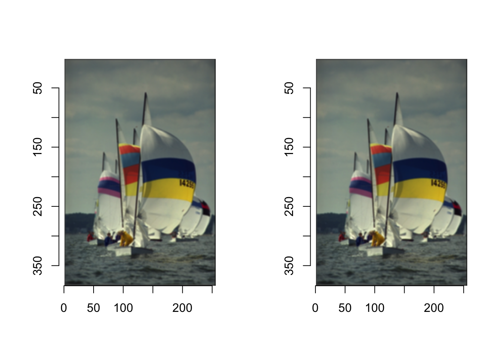
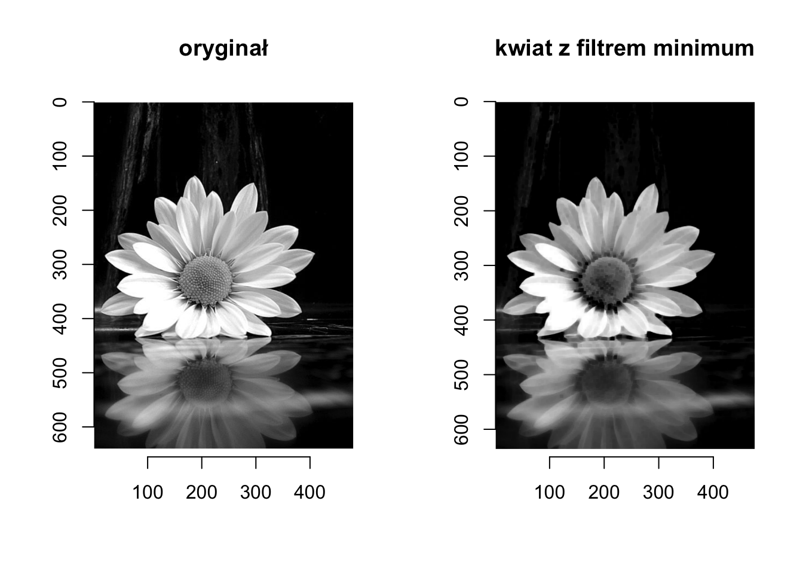
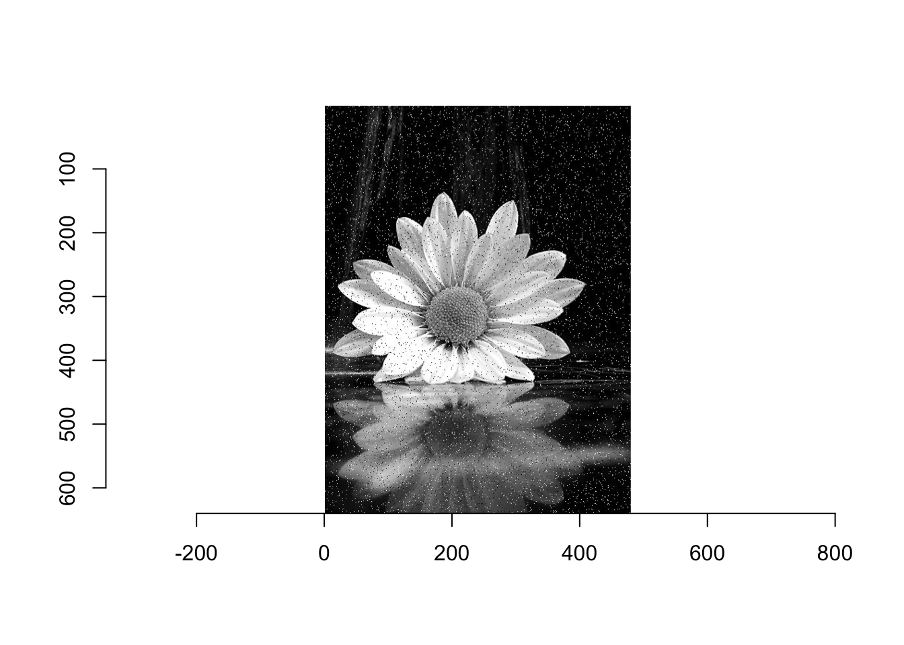
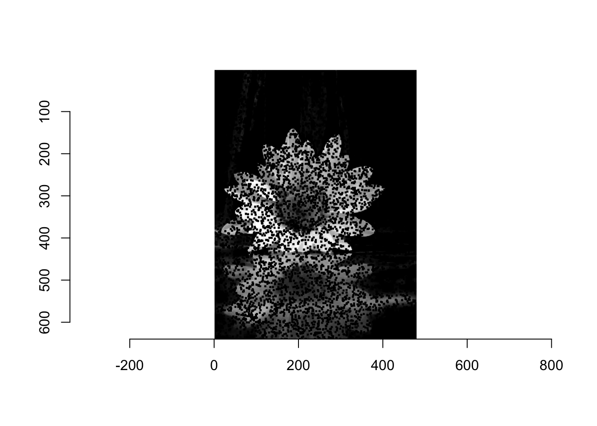
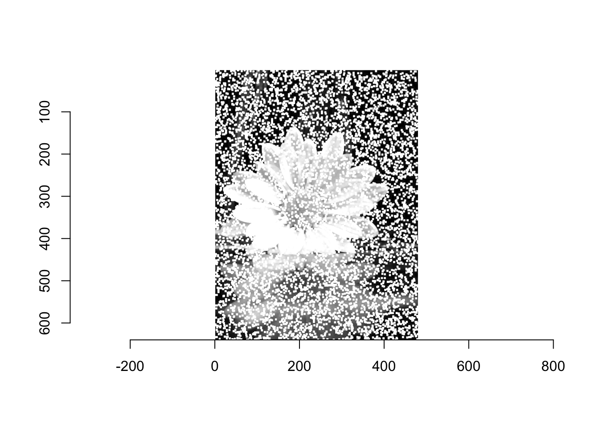
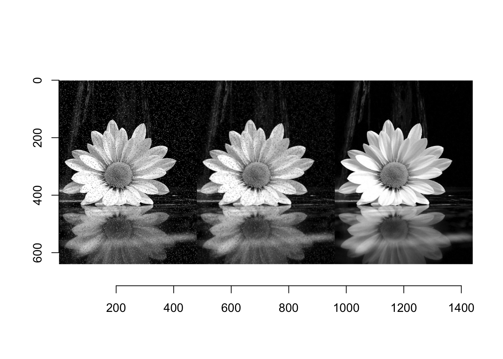
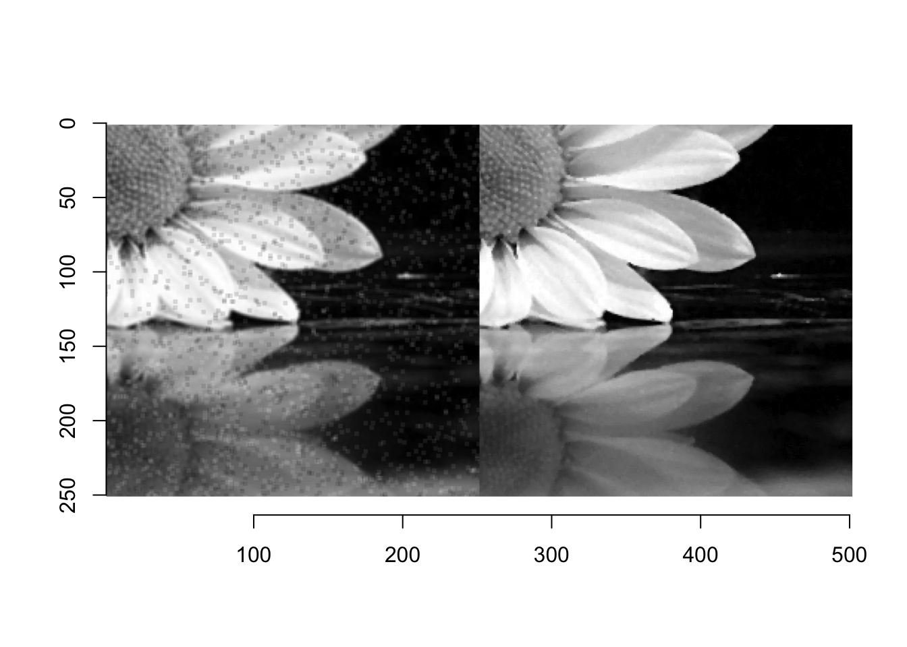

Kod

Zasadniczą własnością operacji punktowych (omówionych w poprzednim rozdziale) jest to, że każda nowa wartość piksela zależy tylko od oryginalnego piksela w tej samej pozycji. Możliwości operacji punktowych są jednak ograniczone. Nie mogą one na przykład zrealizować zadania wyostrzenia lub wygładzenia obrazu (patrz Rysunek 6.1). Taką funkcję mogą spełniać filtry. Są one podobne do operacji punktowych w tym sensie, że również tworzą odwzorowanie 1:1 współrzędnych obrazu, czyli geometria obrazu nie ulega zmianie.
Zastosowany powyżej filtr rozmycia obrazu jest jednym z filtrów liniowych, który działa jak swego rodzaju uśrednienie pikseli w lokalnym otoczeniu. Otoczenie to oczywiście się przesuwa po całym obrazie tworząc obraz przefiltrowany. Chcąc nieco bardziej formalnie przedstawić operację filtracji musimy podzielić filtry na liniowe i nieliniowe.
Filtry liniowe są nazywane w ten sposób, ponieważ łączą wartości pikseli w otoczeniu w sposób liniowy, czyli jako suma ważona. Szczególnym przykładem jest omówiony na początku proces uśredniania lokalnego (Równanie 6.1), gdzie wszystkie dziewięć pikseli w lokalnym otoczeniu 3 × 3 jest dodawanych z identycznymi wagami (1/9). Dzięki temu samemu mechanizmowi można zdefiniować mnóstwo filtrów o różnych właściwościach, modyfikując po prostu rozkład poszczególnych wag.
\[ I'(u,v) = \frac19\sum_{j = -1}^1\sum_{i = -1}^1I(u+i,v+j), \tag{6.1}\]
Dla dowolnego filtra liniowego rozmiar i kształt regionu wsparcia (ang. support region), jak również wagi poszczególnych pikseli, są określone przez jądro filtra (ang. kernel) \(H(i,j)\). Rozmiar jądra \(H\) równa się rozmiarowi regionu filtrującego, a każdy element \((i, j)\) określa wagę odpowiedniego piksela w sumowaniu. Dla filtra wygładzającego 3x3 w równaniu (Równanie 6.1), jądro filtra to
\[ H = \begin{bmatrix} 1/9,&1/9,&1/9\\ 1/9,&1/9,&1/9\\ 1/9,&1/9,&1/9 \end{bmatrix}= \frac19\begin{bmatrix} 1,&1,&1\\ 1,&1,&1\\ 1,&1,&1 \end{bmatrix} \]
ponieważ każda z wartości filtra wnosi 1/9 do piksela wynikowego.
W istocie, jądro filtra \(H(i, j)\) jest, podobnie jak sam obraz, dyskretną, dwuwymiarową funkcją o rzeczywistą, \(H : \mathbb{Z} \times \mathbb{Z} \to \mathbb{R}\). Filtr ma swój własny układ współrzędnych z początkiem - często określanym jako hot spot - przeważnie (ale niekoniecznie) znajdującym się w środku. Tak więc współrzędne filtra są na ogół dodatnie i ujemne (Rysunek 6.2). Funkcja filtra ma nieskończony zakres i jest uważana za zerową poza obszarem zdefiniowanym przez macierz \(H\).

Dla filtru liniowego wynik jest jednoznacznie i całkowicie określony przez współczynniki jądra filtru. Zastosowanie filtru do obrazu jest prostym procesem, który został zilustrowany na Rysunek 6.2. W każdej pozycji obrazu \((u, v)\) wykonywane są następujące kroki:
Opisując formalnie, wartości pikseli nowego obrazu \(I'(u,v)\) są obliczane przez operację
\[ I'(u,v) = \sum_{i,j\in R_H}I(u+i, v+j)\cdot H(i,j), \tag{6.2}\]
gdzie \(R_H\) oznacza zbiór współrzędnych pokrytych przez filtr \(H\). Nie całkiem dla wszystkich współrzędnych, aby być dokładnym. Istnieje oczywisty problem na granicach obrazu, gdzie filtr sięga poza obraz i nie znajduje odpowiadających mu wartości pikseli, które mógłby wykorzystać do obliczenia wyniku. Na razie ignorujemy ten problem granic, ale w dalszej części tego wykładu się tym zajmiemy.

Skoro rozumiemy już zasadnicze działanie filtrów i wiemy, że granice wymagają szczególnej uwagi, możemy pójść dalej i zaprogramować prosty filtr liniowy. Zanim jednak to zrobimy, możemy chcieć rozważyć jeszcze jeden szczegół. W operacji punktowej każda nowa wartość piksela zależy tylko od odpowiadającej jej wartości piksela w oryginalnym obrazie, dlatego nie było problemu z zapisaniem wyników z powrotem do tego samego obrazu - obliczenia są wykonywane “w locie” bez potrzeby pośredniego przechowywania. Obliczenia w miejscu nie są generalnie możliwe dla filtra, ponieważ każdy oryginalny piksel przyczynia się do zmiany więcej niż jednego piksela wynikowego i dlatego nie może być zmodyfikowany przed zakończeniem wszystkich operacji.
Potrzebujemy zatem dodatkowego miejsca na przechowywanie obrazu wynikowego, który następnie może być ponownie skopiowany do obrazu źródłowego (jeśli jest to pożądane). Tak więc kompletna operacja filtrowania może być zaimplementowana na dwa różne sposoby (Rysunek 6.4):

Dla obu wersji wymagana jest taka sama ilość pamięci masowej, a więc żadna z nich nie oferuje szczególnej przewagi. W poniższych przykładach używamy na ogół wersji B.
W filtrze prezentowanym powyżej wagi nie muszą być wszystkie takie same. Przykładowo filtr \(H(u,v)\) określony następująco
\[ H(u,v)=\begin{bmatrix} 0.075,&0.125,&0.075\\ 0.125,&0.200,&0.125\\ 0.075,&0.125,&0.075 \end{bmatrix} \tag{6.3}\]
również uśrednia wartości w regionie wsparcia filtru ale nadając największe wagi wartościom w środku.
Zauważmy, że wagi filtra \(H\) są tak dobrane aby się sumowały do 1. Oznacza to, że filtr ten jest znormalizowany. Normalizacji filtrów używa się po to aby uniknąć sytuacji, w której wartość wyjściowa z filtra byłaby większa niż 255.
Ponieważ funkcja plot pakietu imager ma włączoną opcję rescale = TRUE co oznacza, że wartości wynikowe i tak będą przekształcone do przedziału [0,1], to nie unormowane filtry i tak będą wyświetlać poprawnie przefiltrowane obrazy.
[,1] [,2] [,3]
[1,] 1 1 1
[2,] 1 1 1
[3,] 1 1 1filter2 <- filter1/9
filter2 |>
fractions() # aby ładnie wyświetlić ułamki [,1] [,2] [,3]
[1,] 1/9 1/9 1/9
[2,] 1/9 1/9 1/9
[3,] 1/9 1/9 1/9 
Error in colourscale(v[[1]], v[[2]], v[[3]]) :
color intensity 1.57913, not in [0,1]Zatem możemy w konstruowaniu filtrów stosować wartości całkowite i wspólnej wartości normalizacyjnej.
\[ H(u,v)=\begin{bmatrix} 0.075,&0.125,&0.075\\ 0.125,&0.200,&0.125\\ 0.075,&0.125,&0.075 \end{bmatrix}= \frac1{40}\cdot \begin{bmatrix} 3,&5,&3\\ 5,&8,&5\\ 3,&5,&3 \end{bmatrix}. \]
Aby uniknąć wartości ujemnych, które mogłyby się pojawić w przypadku gdy jądro filtra zawierałoby wartości ujemne, stosuje się stałą przesunięcia (ang. offset). Wówczas Równanie 6.2 przyjmuje postać
\[ I'(u,v) = Offset+\frac{1}{Scale}\cdot \sum_{i,j\in R_H}I(u+i, v+j)\cdot H(i,j), \]
a \(H(i,j)\) jest zdefiniowany na \(\mathbb{Z}\times\mathbb{Z}\). Chociaż najczęściej używa się filtrów kwadratowych, to nie ma przeszkód aby stosować również filtry prostokątne. Powyższa formuła ma zastosowanie do filtrów o dowolnym rozmiarze i kształcie.
Filtr pudełkowy (ang box), którego zasada działania została już przedstawiona w Równanie 6.1 dla rozmiaru filtra 3x3 jest jednym z filtrów wygładzających. Im większy jest rozmiar filtra, tym większy stopień wygładzenia obrazu wyjściowego. Ten najprostszy ze wszystkich filtrów wygładzających, którego kształt 3D przypomina pudełko (Rysunek 6.6 (a)), jest dobrze znany. Niestety, filtr pudełkowy jest daleki od optymalnego filtra wygładzającego ze względu na swoje dziwne zachowanie w przestrzeni częstotliwości, które jest spowodowane ostrym odcięciem wokół jego boków. Opisane w kategoriach częstotliwościowych wygładzanie odpowiada tzw. filtracji dolnoprzepustowej, czyli efektywnemu tłumieniu wszystkich składowych sygnału powyżej danej częstotliwości odcięcia. Filtr pudełkowy wytwarza jednak silne “dzwonienie” w przestrzeni częstotliwości i dlatego nie jest uważany za wysokiej jakości filtr wygładzający. Przypisanie tej samej wagi wszystkim pikselom obrazu w regionie filtru może też wydawać się dość doraźne. Zamiast tego należałoby prawdopodobnie oczekiwać, że silniejszy nacisk zostanie położony na piksele znajdujące się w pobliżu centrum filtra niż na te bardziej odległe. Ponadto filtry wygładzające powinny ewentualnie działać “izotropowo” (tzn. jednolicie w każdym kierunku), co z pewnością nie ma miejsca w przypadku filtra prostokątnego.
Filtr gaussowski - z pewnością lepszy w tym kontekście wygładzania z względu na brak ostrych krawędzi jądra. Definiuje się go następująco \[ H^{G,\sigma}(x,y) = e^{-\frac{x^2+y^2}{2\sigma^2}}, \] gdzie \(\sigma\) oznacza odchylenie standardowe rozkładu.
Jeśli niektóre współczynniki filtra są ujemne, to obliczenie filtra można zinterpretować jako różnicę dwóch sum: suma ważona wszystkich pikseli z przypisanymi współczynnikami dodatnimi minus suma ważona pikseli z ujemnymi współczynnikami w regionie filtra RH , czyli
\[ \begin{align} I'(u,v)=&\sum_{(i,j)\in R^+}I(u+i, v+j)\cdot \vert H(i,j)\vert -\\ -&\sum_{(i,j)\in R^-}I(u+i, v+j)\cdot \vert H(i,j)\vert, \end{align} \tag{6.4}\]
gdzie \(R^-, R^+\) oznaczają podział filtra na współczynniki ujemne \(H(i,j)<0\) i dodatnie \(H(i,j)>0\) odpowiednio. Na przykład filtr Laplace’a 5x5 na Rysunek 6.6 (c) oblicza różnicę między pikselem środkowym (o wadze 16) a sumą ważoną 12 otaczających go pikseli (o wagach -1 lub -2). Pozostałe 12 pikseli ma przypisane zerowe współczynniki i dlatego są one ignorowane w obliczeniach. Podczas gdy lokalne zmiany intensywności są wygładzane przez uśrednianie, możemy oczekiwać, że w przypadku różnic stanie się dokładnie odwrotnie - lokalne zmiany intensywności zostaną wzmocnione.

Wspomniany zapis w równaniu Równanie 6.2 nazywany jest w literaturze operatorem korelacyjnym (ang. correlation operator). Ma on jedną poważną wadę, ponieważ filtr zastosowany do obrazu z pojedynczym wtrąceniem (jednym pikselem świecącym) w rezultacie daje w obrazie wynikowym wartości filtra zrotowane o \(180\degree\) (patrz Rysunek 6.7).

Rozwiązaniem tej niedogodności jest wprowadzenie operatora konwolucyjnego (ang. convolution operator). Definiuje się go w następujący sposób:
\[ I'(u,v) = \sum_{i,j\in R_H}I(u-i, v-j)\cdot H(i,j), \tag{6.5}\]
zapisywany również w bardziej zwartej formie
\[ I'=I*H. \tag{6.6}\]
Aby pokazać związek pomiędzy oboma sposobami filtracji przekształćmy wzór Równanie 6.5
\[ \begin{align} I'(u,v) =& \sum_{i,j\in R_H}I(u-i, v-j)\cdot H(i,j)=\\ =&\sum_{i,j\in R_H}I(u+i, v+j)\cdot H(-i,-j)=\\ =&\sum_{i,j\in R_H}I(u+i, v+j)\cdot H^*(i,j), \end{align} \tag{6.7}\]
gdzie \(H^*(i,j)=H(-i,-j)\). Zmiana parametryzacji powoduje obrócenie wyniku o \(180\degree\).

Konwolucja liniowa jest odpowiednim modelem dla wielu rodzajów zjawisk naturalnych, w tym układów mechanicznych, akustycznych i optycznych. W szczególności istnieją silne formalne powiązania z reprezentacją Fouriera sygnałów w dziedzinie częstotliwości, które są niezwykle cenne dla zrozumienia złożonych zjawisk, takich jak próbkowanie i aliasing. Poniżej przedstawione zostaną własności konwolucji liniowej.
Konwolucja liniowa jest przemienna, czyli dla dowolnego obrazu \(I\) i jądra filtru \(H\), zachodzi
\[ I ∗ H = H ∗ I. \tag{6.8}\]
Wynik jest więc taki sam, jeśli obraz i jądro filtra są wzajemnie zamienione, i nie ma różnicy, czy składamy obraz \(I\) z jądrem \(H\), czy odwrotnie.
Filtry liniowe nazywane są tak ze względu na właściwości liniowości operacji konwolucji, która przejawia się w różnych aspektach. Na przykład, jeśli obraz jest mnożony przez skalar \(s\in\mathbb{R},\) to wynik konwolucji mnoży się o ten sam czynnik, czyli
\[ (s\cdot I)∗H = I ∗(s\cdot H) = s\cdot(I ∗H). \tag{6.9}\]
Podobnie, jeśli dodamy dwa obrazy \(I_1\), \(I_2\) piksel po pikselu i spleciemy wynikowy obraz za pomocą pewnego jądra \(H\), to taki sam wynik uzyskamy splatając każdy obraz osobno i dodając potem oba wyniki, czyli
\[ (I_1 +I_2)∗H = (I_1 ∗H)+(I_2 ∗H). \tag{6.10}\]
Zaskakujące może być jednak to, że samo dodanie do obrazu stałej wartości \(b\) nie powiększa wyniku splotu o taką samą ilość,
\[ (b+I)∗H\neq b+(I∗H), \]
a więc nie jest częścią własności liniowości. Chociaż liniowość jest ważną własnością teoretyczną, należy zauważyć, że w praktyce filtry “liniowe” są często tylko częściowo liniowe z powodu błędów zaokrąglenia lub ograniczonego zakresu wartości wyjściowych.
Konwolucja liniowa jest łączna, co oznacza, że kolejność operacji na filtrze nie ma znaczenia, czyli,
\[ (I∗H_1)∗H_2 =I∗(H_1 ∗H_2). \tag{6.11}\]
Tak więc wiele filtrów może być zastosowanych w dowolnej kolejności, jak również wiele filtrów może być dowolnie łączonych w nowe filtry.
Bezpośrednią konsekwencją łączności jest rozdzielność filtrów liniowych. Jeżeli jądro konwolucyjne \(H\) można wyrazić jako złożenie wielu jąder \(H_i\) w postaci
\[ H = H1 ∗ H2 ∗ . . . ∗ Hn, \tag{6.12}\]
wówczas (jako konsekwencja Równanie 6.11) operacja filtru \(I ∗ H\) może być wykonana jako ciąg konwolucji z jądrami składowymi \(H_i,\)
\[ I ∗ H = I ∗ (H_1 ∗ H_2 ∗ . . . ∗ H_n) = (\ldots((I ∗H_1)∗H_2)∗\ldots∗H_n). \tag{6.13}\]
W zależności od rodzaju dekompozycji może to przynieść znaczne oszczędności obliczeniowe. O rozdzielczości filtrów możemy myśleć również nieco inaczej
\[ I'=(I*h_x)*h_y, \] gdzie \(h_x, h_y\) są filtrami 1D, które po wymnożeniu tworzą filtr o wymiarze \(k\times m\). Przykładowo
\[ \begin{bmatrix} 1,&1,&1,&1,&1\\ 1,&1,&1,&1,&1\\ 1,&1,&1,&1,&1 \end{bmatrix} = H = h_x*h_y= \begin{bmatrix} 1\\ 1\\ 1 \end{bmatrix} \cdot \begin{bmatrix} 1,&1,&1,&1,&1 \end{bmatrix} \tag{6.14}\]
Stosując tą własność rozłączności możemy również przedstawić filtr o jądrze gassuowskim 2D, za pomocą mnożenia filtrów gaussowskich 1D.
\[ H^{G,\sigma}=h^{G,\sigma}_x*h^{G,\sigma}_y, \tag{6.15}\]
gdzie \(h^{G,\sigma}_x,h^{G,\sigma}_y\) są filtrami gaussowskimi 1D. Kolejność użytych filtrów ponownie nie ma znaczenia. Jeśli dla poszczególnych składowych odchylenia standardowe nie są równe, to filtr gaussowski 2D ma charakter eliptyczny.
W algebrze filtrów liniowych istniej coś na kształt elementu neutralnego dla operacji splotu
\[ I = \delta*I, \tag{6.16}\]
gdzie
\[ \delta(u,v)= \begin{cases} 1, &\text{ jeśli }u=v=0\\ 0, &\text{ w przeciwnym przypadku} \end{cases} \tag{6.17}\]
Co ciekawe filtr ten nie zmienia jedynie samego obrazu ale również innych filtrów
\[ H=\delta*H=H*\delta. \tag{6.18}\]
Jak wszystkie inne filtry, filtry nieliniowe obliczają wynik w danej pozycji obrazu \((u,v)\) z pikseli znajdujących się wewnątrz ruchomego regionu \(R_{u,v}\) oryginalnego obrazu. Filtry te nazywane są “nieliniowymi”, ponieważ wartości pikseli źródłowych są łączone przez jakąś funkcję nieliniową. Najprostszymi ze wszystkich filtrów nieliniowych są filtry minimum i maksimum, zdefiniowane jako
\[ \begin{align} I'(u,v)=&\min_{(i,j)\in R}\{I(u+i, v+j)\}\\ I'(u,v)=&\max_{(i,j)\in R}\{I(u+i, v+j)\} \end{align} \tag{6.19}\]
gdzie \(R\) oznacza region filtra (zbiór współrzędnych filtra, zwykle kwadrat o rozmiarach 3x3 pikseli). Rysunek 6.10 ilustruje wpływ minimalnego filtra 1D na różne lokalne struktury sygnału.

kwiat <- load.image(file = "~/kwiat.jpg") |> grayscale()
min_filter <- function(im, radius) {
stencil <- expand.grid(dx = -radius:radius, dy = -radius:radius)
filtered <- matrix(0, nrow = height(im), ncol = width(im))
range_x <- (1 + radius):(width(im) - radius)
range_y <- (1 + radius):(height(im) - radius)
dt <- expand.grid(range_x, range_y)
dt$min <- apply(dt, 1, function(row) min(get.stencil(im,
stencil,
x = row[1],
y = row[2])))
filtered <- dt$min |>
matrix(ncol = height(im)-2*radius,
nrow = width(im)-2*radius) |>
as.cimg()
return(filtered)
}
kwiat_filtered <- min_filter(kwiat, radius = 2)
layout(t(1:2))
kwiat |> plot(main = 'oryginał')
kwiat_filtered |> plot(main = "filtr minimum")
W przypadku obrazów z wtrąceniami w kolorze białym lub czarnym efekt występowania tych wtrąceń jest potęgowany (patrz Rysunek 6.11). Filtr minimum wyciąga kolor czarny, natomiast filtr maksimum kolor biały.
kwiat_noisy <- load.image(file = "~/kwiat_salt_pepper.jpg") |> grayscale()
kwiat_noisy |> plot()
kwiat_noisy |>
erode_square(size = 5) |>
plot()
kwiat_noisy |>
dilate_square(size = 5) |>
plot()


Nie da się oczywiście zaprojektować filtra, który usunie każdy szum i zachowa wszystkie ważne struktury obrazu, ponieważ żaden filtr nie jest w stanie rozróżnić, która zawartość obrazu jest ważna dla widza, a która nie. Popularny filtr medianowy jest z pewnością dobrym krokiem w tym kierunku.
Filtr medianowy zastępuje każdy piksel obrazu medianą pikseli w bieżącym regionie filtra \(R\), czyli
\[ I'(u,v)=\operatorname{Median}_{(i,j)\in R}\{I(u+i, v+j)\}. \tag{6.20}\]

Równanie (Równanie 6.20) definiuje medianę zbioru wartości o nieparzystej liczebności. Jeśli długość boku filtrów prostokątnych jest nieparzysta (co zwykle ma miejsce), to liczba elementów w regionie filtrów również jest nieparzysta. W takim przypadku filtr medianowy nie tworzy żadnych nowych wartości pikseli. Jeśli jednak liczba elementów jest parzysta, to mediana posortowanego ciągu \(A = (a_0,\ldots,a_{2n-1})\) jest definiowana jako średnia arytmetyczna dwóch sąsiednich wartości środkowych \(a_{n-1}\) i \(a_n\). W ten sposób mogą być wprowadzone nowe wartości do obrazu.
box_flt <- kwiat_noisy |>
boxblur(boxsize = 3)
median_flt <- kwiat_noisy |>
medianblur(n = 3)
list(kwiat_noisy, box_flt, median_flt) |>
imappend("x") |>
plot()

Mediana jest statystyką porządkową i w pewnym sensie “większość” uwzględnianych wartości pikseli określa wynik. Pojedyncza wyjątkowo wysoka lub niska wartość (“odstająca”) nie może wpłynąć na wynik, a jedynie przesunąć go w górę lub w dół do następnej wartości. Dlatego mediana (w przeciwieństwie do średniej) jest uważana za miarę “odporną”. W zwykłym filtrze medianowym każdy piksel w regionie filtra ma taki sam wpływ, niezależnie od jego odległości od środka.
Jak to zostało zaznaczone wcześniej zastosowanie jakiegokolwiek filtru (liniowego lub nieliniowego) wiąże się z pewna niedogodnością. Mianowicie wszystkie filtry kwadratowe czy prostokątne są kłopotliwe w zastosowaniu jeśli centrum (hot spot) filtra leży blisko brzegu obrazu. Teoretycznie filtry nie mogą być stosowane w miejscach, gdzie macierz filtrów nie jest w pełni zawarta w macierzy obrazu. Zatem każda operacja filtrująca zmniejszyłaby rozmiar obrazu wynikowego, co w większości zastosowań jest nie do przyjęcia. Choć nie istnieje formalnie poprawne remedium, istnieje kilka mniej lub bardziej praktycznych metod obsługi regionów granicznych:
Piksele poza obrazem mają stałą wartość (np. “czarny” lub “szary”, patrz Rysunek 6.15 (b)). Może to powodować silne artefakty na granicach obrazu, szczególnie w przypadku stosowania dużych filtrów.
Piksele graniczne wykraczają poza granice obrazu (Rysunek 6.15 (c)). W miejscach występowania granic można spodziewać się jedynie niewielkich artefaktów. Metoda ta jest również prosta obliczeniowo i dlatego często jest uważana za najlepszy wybór.
Obraz jest odbijany na każdej ze swoich czterech granic (Rysunek 6.15 (d)). Wyniki będą podobne jak w przypadku poprzedniej metody, o ile nie zostaną użyte bardzo duże filtry.
Obraz powtarza się cyklicznie w kierunku poziomym i pionowym (Rysunek 6.15 (e)). Może się to początkowo wydawać dziwne, a wyniki na ogół nie są zadowalające. Jednak w dyskretnej analizie spektralnej obraz jest pośrednio traktowany również jako funkcja okresowa. Jeśli więc obraz jest filtrowany w dziedzinie częstotliwości, to wyniki będą równe filtracji w dziedzinie przestrzeni w ramach tego powtarzalnego modelu.

Żadna z tych metod nie jest doskonała i zwykle, właściwy wybór zależy od rodzaju obrazu i zastosowanego filtra.